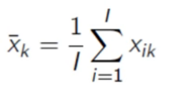
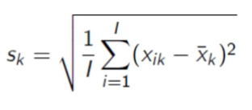
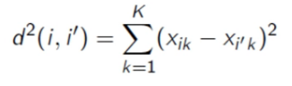
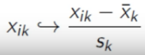
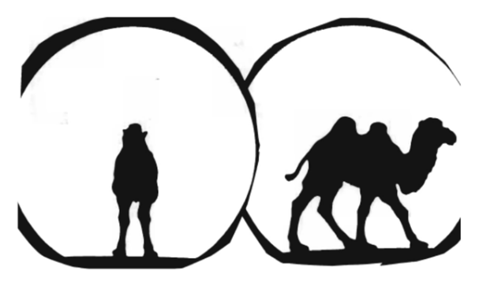
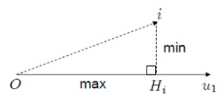

Table of Contents
This project aims to implement simple statistical tools for people learning statistics.
1 PCA - Principal Component Analysis
Theses are some notes taken from the video of François Husson at https://www.youtube.com/watch?v=8qw0bNfK4H0.
The PCA analyses rectangular data tables with individuals as lines and quantitative variables as columns.
The PCA is an exploratory/descriptive method.
A table has 1..K variables and 1..I individuals.
For a variable k, we note the mean (1) and the standard deviation (2).

Figure 1: the mean

It is possible to see the table in two different ways: as a set of lines, or as a set of columns. For individuals (lines), we aim to understand when individuals are similar given the whole set of variables. For variables (columns), we want to understand similarities between variables (bonds). These can be measured via the correlation coefficient: two variables having a high correlation (near 1) will be variables that contain the same information. The PCA allows to find good indicators that summarize one or several variables.
The study of individuals and the one of variables are related:
- we can classify individuals from variables
- it is possible to depict variable's bonds with specific individuals (e.g. tall people are heavy whereas small ones are light).
1.1 Visualize individuals
For K dimensions, it's not always possible to visualize individuals 'clouds':
- K = 1: one axis
- K = 2: 2D graph
- K = 3: 3D graph
- K >= 4: not possible.
If K >= 4, in order to find a visualization, we wanna know how to measure similarities between individuals. Two individuals are similar when they take similar values on the set of K variables.

Figure 3: the similarity between two individuals
The shape of the cloud will inform us about individuals' relations.
Like a pic of a bird swarm enables us to imagine the 3D shape of it, the cloud of K variables of I individuals made during PCA will enable us to imagine its actual KD shape!
1.2 Pre-processing data
After centering+reduction, the data is left without units.
1.2.1 Centering
Translation of the data cloud.
1.2.2 Reduction
Whether we should reduce or not depends on when we have variables in several units.
Without reduction, variables that have a greater variability will have a bigger influence. The importance of a variable is proportional to its standard deviation.

Figure 4: influence of variables
1.3 Intuition
The intuition tells us that in order to choose from all the possible cloud configurations (data projections), we should summarize the data by choosing the one that increases distances between every points.
1.4 Image quality
In order to know the quality of a image (or projection of the data cloud), we use the dispersion (variability).

Figure 5: Which animal? (Image from JP Fénelon)
1.5 How to find the best image of the data cloud
1.5.1 First axis
Find the first axis or first factor that distort the least the data cloud.

\(H_i\), the projection of individual \(i\) on an axis. \(O\) the gravity center of the cloud.
\((iH_i)^2\) is the distance between the individual \(i\) and its projection on an axis. We aim to minimize the latter distance.
\((iH_i)^2\) is small when \((OH_i)^2\) is great.
We want to maximize \(\sum_i(OH_i)^2\).
1.5.2 Best plan
Maximize \(\sum_i(OH_i)^2\) with \(H_i \in plan\). The best plan entails the best axis. In order to find it, we first search for the best axis and then search for an other axis \(u_2 \perp u_2\) (perpendicular to the first) that maximizes \(\sum_i(OH_i)^2\).
We repeat the same process in order to find new axis, orthogonal to the last one and maximizing the distance.
1.6 Visualize Variables
Reminder: a variable is a point in a \(I\) dimensions space.
For two variables \(k\) and \(l\):
\begin{equation} \begin{split} \cos(\theta _{kl}) & = \frac {< x_{.k},x_{.l} >} {\parallel x_{.k} \parallel \parallel x_{.l} \parallel} \\ & = \frac {\sum_{i=1}^{I} x_{ik} x_{il}} { \sqrt{\sum_{i=1}^{I}x_{ik}^2} \sqrt{\sum_{i=1}^{I}x_{il}^2} } \\ & = r(x_{.k},x_{.l}) \end{split} \end{equation}with \(r\), the correlation coefficient (only because data is centered).
1.7 How to visualize the cloud of variables
Like for individuals: research orthogonal axis:
\begin{equation} arg max \sum _{k=1} ^{K} r(v_1,x_{.k})^2 \end{equation}with \(v1 \in \mathbb{R} ^{\prime}\).